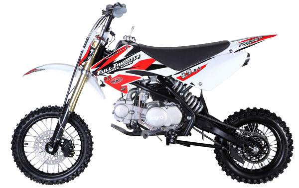
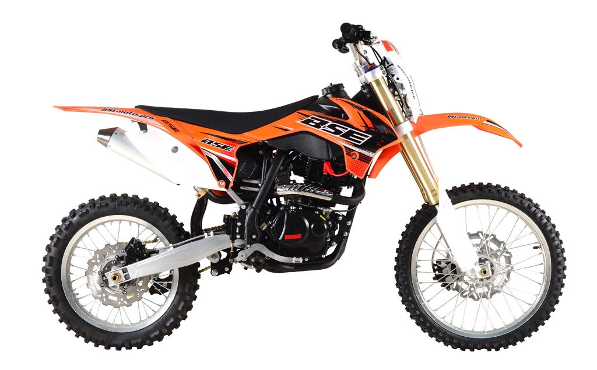
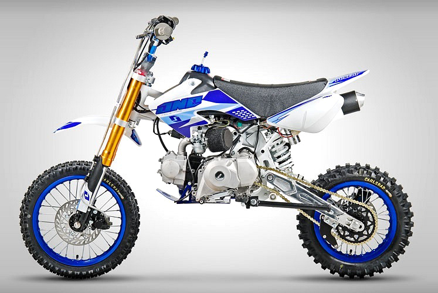

Пит-Байк

Питбайк — это разновидность мотоцикла, пригодного для мотокросса или супермото.

История появления термина
История питбайков прошла эволюцию от обычного велосипеда до полноценного мотокроссового мини-мотоцикла. Такое понятие как «питбайк» появилось впервые в США. Механики, персонал или сами гонщики использовали подручное транспортное средство для перемещения по пит-лэйну или территории трассы во время подготовки к заездам и во время гонки. Чаще всего таким средством оказывался велосипед. Например, были весьма популярны велосипеды Schwinn StingRays, поскольку являлись довольно компактными, но достаточными для того, чтобы на них мог перемещаться взрослый человек. Отсюда и пошло название «питбайк» — то есть буквально «велосипед для технического бокса».

Характеристика питбайков
Основное отличие питбайка от других мотоциклов - двигатель типа Honda Cub с горизонтальным расположением цилиндра (Исключением являются мотоциклы из линейки Yamaha PW).Питбайк имеет чаще всего 10-, 12-, 14- и 17-дюймовые колеса. Поскольку мотоцикл конструируют так, чтобы на нём мог ездить и взрослый человек, питбайк имеет удлиненную колесную базу.Питбайки для начинающих могут иметь полуавтоматическую или автоматическую трансмиссию (как, например, Yamaha PW50). Питбайки условно можно разделить на две категории: мотоциклы для начинающих и мотоциклы для гонок.
Модель 1090 предлагается в двух вариантах: дорожная версия 1090 Adventure и готовый к Off-road испытаниям 1090 Adventure R.

Дисциплины для питбайков
В России проводятся любительские соревнования по минимотокроссу с участием питбайков. Отдельно во Всероссийский реестр видов спорта (ВРВС) минимотокросс пока не включен и официальной дисциплиной не является. Тем не менее уже проводятся соревнования Кубка России по Минимотарду (питбайкам). В 2015 году Чемпионом России по питбайкам стал петербуржец Макар Юрченко.